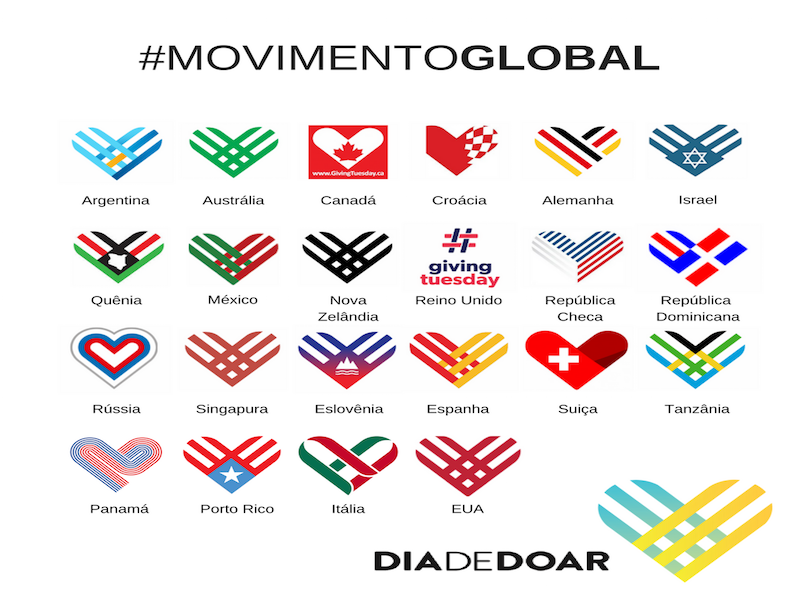
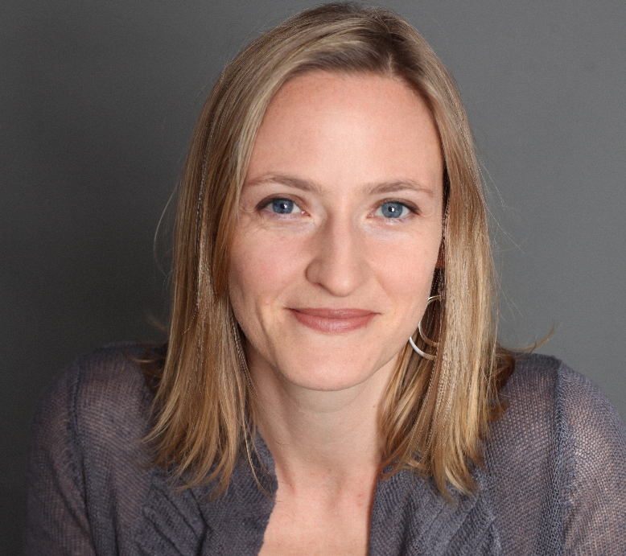

Entrevista com Asha Curran, uma das criadoras do #GivingTuesday, o #diadedoar
01 de Agosto de 2017 às 07:00
Como surgiu o #diadedoar? Qual era o objetivo inicial?
O #diadedoar, internacionalmente chamado de #GivingTuesday, foi criado por Henry Timms, na 92nd Street Y, um centro cultural e comunitário em Nova Iorque, e surgiu a partir da ideia de ter um dia para promover a doação que fosse depois da Black Friday e da Cyber Monday, que são grandes e bem sucedidos dias de compras nos Estados Unidos. Doar é o cerne da nossa missão e a campanha do #diadedoar foi uma expressão moderna do nosso valor central. Queríamos criar um dia dedicado a doação que incentivasse todo mundo a doar, em qualquer lugar, do jeito que for mais significativo.
Quantos países já adotaram a campanha em 2017? Por que você acha que ela cresce rapidamente ao redor do mundo? E qual é a sua avaliação depois de todos esses anos?
O #diadedoar está presente em mais de 100 países, com movimentos organizados oficialmente liderados em mais de 30. Isso significa que identificamos líderes de destaque em vários tipos de organizações que entendem o movimento e têm os recursos e a compreensão para torná-lo um sucesso em suas regiões. Após 5 anos, é inspirador saber que o conceito de um dia de doação é importante para as pessoas em todos esses países que não tem Black Friday ou Cyber Monday. As regiões são, obviamente, extremamente diferentes umas das outras e ainda assim vimos que elas compartilham desafios e oportunidades similares.
Qual é a relação entre o #diadedoar, promover a filantropia e movimento cívico?
Doar é uma expressão do nosso compromisso com nossas comunidades. É um ato importante do envolvimento cívico e do cuidado de todos os seres humanos e das causas que, em última instância, afetam a todos. É tão importante quanto votar. O #diadedoar também comemora a idéia de que todos podem ser filantropos, não importa quão pequena seja sua doação; e a idéia de que os atos de bondade e voluntariado tem o mesmo valor.
Como você acredita que o #diadedoar pode engajar novas pessoas para doar ou se envolver?
O movimento foi projetado para ser adaptado e co-construído, então nós o vemos constantemente adaptado pelas pessoas que participam. E, também por isso, elas sentem um senso de propriedade, responsabilidade e compromisso com o movimento. As mídias sociais contribuem para que a ideia de doar o tempo todo se difunda e, conforme, as pessoas compartilhem as causas com as quais elas se importam e doam, inspirem mais pessoas a fazer o mesmo. Os jovens simplesmente não doam da mesma maneira que seus pais ou avós doavam. Queremos ter muitos caminhos para eles se tornarem doadores.
Onde está a relação entre o #diadedoar e a inovação social?
O #diadedoar é uma inovação criada no laboratório de inovação da 92nd Street Y. Não são apenas as startups que podem pensar em grandes novas ideias. O #diadedoar é uma prova de que uma instituição muito grande e antiga pode incubar uma ideia de mudança cultural. Todos devemos nos desafiar a pensar em formas mais ambiciosas e mais significativas sobre criatividade, experimentação e colaboração.
Onde estão os pontos-chave para o sucesso da campanha nos diferentes países em que ela está presente? Quais são as diferenças que você vê entre a cultura de filantropia anglo-saxã e os demais países? Qual é a taxa de crescimento nas doações nos últimos anos, nos EUA?
Diferentes países têm diferentes métricas para o sucesso, não apenas relacionadas à captação de recursos. Os movimentos bem sucedidos do #diadedoar, independentemente dos países, alavancaram parcerias com empresas, meios de comunicação, jovens, voluntários e muitas vezes escolas e igrejas. O que é mais marcante do que as diferenças entre os países são as semelhanças. Em todos os países ouvimos que o #diadedoar ecoa nas pessoas. E em todos eles nossos líderes falam sobre querer ver o setor social ser mais colaborativo, mais criativo, mais experimental.
Qual pode ser o papel das empresas no #diadedoar? Quais são os melhores exemplos e práticas?
As empresas podem usar a campanha para reforçar as causas que apoiam e falar com um público amplo e diversificado. Vemos empresas em países diferentes fazendo parcerias com organizações sem fins lucrativos e/ou celebridades, oferecendo matching para doações (a cada real doado pelas pessoas, a empresa doa mais um), lançando campanhas nas redes sociais; nós também as vemos usando o #diadedoar para fazer campanhas de engajamento de seus funcionários ou usando o dia para lançar iniciativas de doação no ambiente do trabalho.
O #diadedoar é um contraponto à Black Friday ou é uma iniciativa complementar?
Sem dúvidas nós pensamos que seria ótimo ter um dia dedicado ao setor social da mesma forma que a Black Friday é tão benéfica para o setor varejista. Mas quando as pessoas compram na Black Friday, eles geralmente estão comprando presentes para entes queridos. É também uma expressão de generosidade. Então, faz sentido, ao gastar dinheiro em bens, para os entes queridos ou para si mesmo, que depois lembrem-se de todas as formas que podemos devolver aos necessitados, aos menos afortunados ou à causas urgentes em nossas comunidades ou no nosso mundo.
Quem são as fundações e as empresas que promovem #diadedoar a nível global? Estas empresas e organizações se aproximam da iniciativa ou vice-versa?
A Fundação Bill & Melinda Gates tem sido uma grande apoiadora da campanha no nível global. Eles estão muito interessados em ver o fortalecimento do setor social em todo o mundo e nos ajudam a fazer isso de muitas maneiras - através de análise de dados, colaborações, compreensão de comportamentos, planejamento estratégico para os próximos anos e muito mais. Empresas como PayPal, Blackbaud e Microsoft também fizeram parte do nosso trabalho nos EUA e além.
Quais são as oportunidades oferecidas pelo #diadedoar para as ONGs, inclusive as pequenas, que se juntam à iniciativa?
Nossos dados indicam que as ONGs pequenas podem ser tão bem sucedidas quanto as grandes. Algumas das campanhas mais criativas e colaborativas que já vimos foram de organizações pequenas ou médias. O tamanho do orçamento operacional de uma organização não tem nada a ver com sua capacidade de alavancar parcerias entre setores, ser criativo nas redes sociais ou capacitar seus funcionários para assumir alguns riscos e tentar coisas novas no #diadedoar.
Quão importantes são as redes sociais para obter sucesso no #diadedoar?
Uma das idéias originais por trás da criação do #diadedoar era ser uma experiência para ver se as mídias sociais poderiam tornar a generosidade viral. As redes sociais tomam idéias e as espalham para muitas pessoas, grupos diversos, de todas as idades e caminhos de vida. E ficamos muito felizes em ver que a idéia de que qualquer um pode doar, compartilhar suas ações e gerar impacto real se espalhou, em grande parte por causa das mídias sociais. Além disso, as regiões do mundo que estão envolvidas no #diadedoar têm comportamentos muito diferentes nas mídias sociais e, mesmo onde elas não são tão influentes, o #diadedoar funciona.
Quais são as expectativas para #diadedoar nos próximos anos? Onde você vê a campanha em 2020?
Nós tentamos não olhar muito para a frente uma vez que a campanha está sempre nos surpreendendo e nos levando em novas direções. Como dizemos, é um movimento porque está se movendo sozinho! Então, primeiro, estamos dispostos a ver onde a comunidade o leva. Mas, da nossa perspectiva na "sede" em Nova Iorque, buscamos apoiar o crescimento global, o trabalho de coleta de dados e de capacitação no setor. Essas são as coisas que achamos incrivelmente importantes.
O que podemos aprender a partir da análise dos dados globais do #diadedoar?
Além dos dados que nós mesmos coletamos, nós simplesmente não temos tantos dados globais para analisar ainda. Eu acho que o trabalho global é tão novo que temos que pensar sobre como coletar, agregar e analisar todos esses dados da forma adequada. O que sabemos é que esta é a maior colaboração filantrópica global que já existiu. Isso é incrível. Em seguida vem descobrir como medir tudo.
Acesse o site do #diadedoar aqui.
O #diadedoar, internacionalmente chamado de #GivingTuesday, foi criado por Henry Timms, na 92nd Street Y, um centro cultural e comunitário em Nova Iorque, e surgiu a partir da ideia de ter um dia para promover a doação que fosse depois da Black Friday e da Cyber Monday, que são grandes e bem sucedidos dias de compras nos Estados Unidos. Doar é o cerne da nossa missão e a campanha do #diadedoar foi uma expressão moderna do nosso valor central. Queríamos criar um dia dedicado a doação que incentivasse todo mundo a doar, em qualquer lugar, do jeito que for mais significativo.
Quantos países já adotaram a campanha em 2017? Por que você acha que ela cresce rapidamente ao redor do mundo? E qual é a sua avaliação depois de todos esses anos?
O #diadedoar está presente em mais de 100 países, com movimentos organizados oficialmente liderados em mais de 30. Isso significa que identificamos líderes de destaque em vários tipos de organizações que entendem o movimento e têm os recursos e a compreensão para torná-lo um sucesso em suas regiões. Após 5 anos, é inspirador saber que o conceito de um dia de doação é importante para as pessoas em todos esses países que não tem Black Friday ou Cyber Monday. As regiões são, obviamente, extremamente diferentes umas das outras e ainda assim vimos que elas compartilham desafios e oportunidades similares.
Qual é a relação entre o #diadedoar, promover a filantropia e movimento cívico?
Doar é uma expressão do nosso compromisso com nossas comunidades. É um ato importante do envolvimento cívico e do cuidado de todos os seres humanos e das causas que, em última instância, afetam a todos. É tão importante quanto votar. O #diadedoar também comemora a idéia de que todos podem ser filantropos, não importa quão pequena seja sua doação; e a idéia de que os atos de bondade e voluntariado tem o mesmo valor.
Como você acredita que o #diadedoar pode engajar novas pessoas para doar ou se envolver?
O movimento foi projetado para ser adaptado e co-construído, então nós o vemos constantemente adaptado pelas pessoas que participam. E, também por isso, elas sentem um senso de propriedade, responsabilidade e compromisso com o movimento. As mídias sociais contribuem para que a ideia de doar o tempo todo se difunda e, conforme, as pessoas compartilhem as causas com as quais elas se importam e doam, inspirem mais pessoas a fazer o mesmo. Os jovens simplesmente não doam da mesma maneira que seus pais ou avós doavam. Queremos ter muitos caminhos para eles se tornarem doadores.
Onde está a relação entre o #diadedoar e a inovação social?
O #diadedoar é uma inovação criada no laboratório de inovação da 92nd Street Y. Não são apenas as startups que podem pensar em grandes novas ideias. O #diadedoar é uma prova de que uma instituição muito grande e antiga pode incubar uma ideia de mudança cultural. Todos devemos nos desafiar a pensar em formas mais ambiciosas e mais significativas sobre criatividade, experimentação e colaboração.
Onde estão os pontos-chave para o sucesso da campanha nos diferentes países em que ela está presente? Quais são as diferenças que você vê entre a cultura de filantropia anglo-saxã e os demais países? Qual é a taxa de crescimento nas doações nos últimos anos, nos EUA?
Diferentes países têm diferentes métricas para o sucesso, não apenas relacionadas à captação de recursos. Os movimentos bem sucedidos do #diadedoar, independentemente dos países, alavancaram parcerias com empresas, meios de comunicação, jovens, voluntários e muitas vezes escolas e igrejas. O que é mais marcante do que as diferenças entre os países são as semelhanças. Em todos os países ouvimos que o #diadedoar ecoa nas pessoas. E em todos eles nossos líderes falam sobre querer ver o setor social ser mais colaborativo, mais criativo, mais experimental.
Qual pode ser o papel das empresas no #diadedoar? Quais são os melhores exemplos e práticas?
As empresas podem usar a campanha para reforçar as causas que apoiam e falar com um público amplo e diversificado. Vemos empresas em países diferentes fazendo parcerias com organizações sem fins lucrativos e/ou celebridades, oferecendo matching para doações (a cada real doado pelas pessoas, a empresa doa mais um), lançando campanhas nas redes sociais; nós também as vemos usando o #diadedoar para fazer campanhas de engajamento de seus funcionários ou usando o dia para lançar iniciativas de doação no ambiente do trabalho.
O #diadedoar é um contraponto à Black Friday ou é uma iniciativa complementar?
Sem dúvidas nós pensamos que seria ótimo ter um dia dedicado ao setor social da mesma forma que a Black Friday é tão benéfica para o setor varejista. Mas quando as pessoas compram na Black Friday, eles geralmente estão comprando presentes para entes queridos. É também uma expressão de generosidade. Então, faz sentido, ao gastar dinheiro em bens, para os entes queridos ou para si mesmo, que depois lembrem-se de todas as formas que podemos devolver aos necessitados, aos menos afortunados ou à causas urgentes em nossas comunidades ou no nosso mundo.
Quem são as fundações e as empresas que promovem #diadedoar a nível global? Estas empresas e organizações se aproximam da iniciativa ou vice-versa?
A Fundação Bill & Melinda Gates tem sido uma grande apoiadora da campanha no nível global. Eles estão muito interessados em ver o fortalecimento do setor social em todo o mundo e nos ajudam a fazer isso de muitas maneiras - através de análise de dados, colaborações, compreensão de comportamentos, planejamento estratégico para os próximos anos e muito mais. Empresas como PayPal, Blackbaud e Microsoft também fizeram parte do nosso trabalho nos EUA e além.
Quais são as oportunidades oferecidas pelo #diadedoar para as ONGs, inclusive as pequenas, que se juntam à iniciativa?
Nossos dados indicam que as ONGs pequenas podem ser tão bem sucedidas quanto as grandes. Algumas das campanhas mais criativas e colaborativas que já vimos foram de organizações pequenas ou médias. O tamanho do orçamento operacional de uma organização não tem nada a ver com sua capacidade de alavancar parcerias entre setores, ser criativo nas redes sociais ou capacitar seus funcionários para assumir alguns riscos e tentar coisas novas no #diadedoar.
Quão importantes são as redes sociais para obter sucesso no #diadedoar?
Uma das idéias originais por trás da criação do #diadedoar era ser uma experiência para ver se as mídias sociais poderiam tornar a generosidade viral. As redes sociais tomam idéias e as espalham para muitas pessoas, grupos diversos, de todas as idades e caminhos de vida. E ficamos muito felizes em ver que a idéia de que qualquer um pode doar, compartilhar suas ações e gerar impacto real se espalhou, em grande parte por causa das mídias sociais. Além disso, as regiões do mundo que estão envolvidas no #diadedoar têm comportamentos muito diferentes nas mídias sociais e, mesmo onde elas não são tão influentes, o #diadedoar funciona.
Quais são as expectativas para #diadedoar nos próximos anos? Onde você vê a campanha em 2020?
Nós tentamos não olhar muito para a frente uma vez que a campanha está sempre nos surpreendendo e nos levando em novas direções. Como dizemos, é um movimento porque está se movendo sozinho! Então, primeiro, estamos dispostos a ver onde a comunidade o leva. Mas, da nossa perspectiva na "sede" em Nova Iorque, buscamos apoiar o crescimento global, o trabalho de coleta de dados e de capacitação no setor. Essas são as coisas que achamos incrivelmente importantes.
O que podemos aprender a partir da análise dos dados globais do #diadedoar?
Além dos dados que nós mesmos coletamos, nós simplesmente não temos tantos dados globais para analisar ainda. Eu acho que o trabalho global é tão novo que temos que pensar sobre como coletar, agregar e analisar todos esses dados da forma adequada. O que sabemos é que esta é a maior colaboração filantrópica global que já existiu. Isso é incrível. Em seguida vem descobrir como medir tudo.
Acesse o site do #diadedoar aqui.

Asha Curran, co-criadora do
#GivingTuesday
Notícias mais populares
Gestão
Em agosto de 2017, a revista ÉPOCA e o Instituto Doar divulgaram a primeira ediç&...
Contexto e tendências
Criado para tornar mais transparentes as parcerias entre a administração públic...
Profissional captador
A captação de recursos é fundamental para a sustentabilidade de uma organiza&cc...